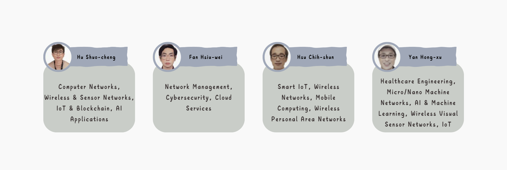

Course Introduction
The emergence of artificial intelligence (AI), the Internet of Things (IoT), and cloud computing has brought about a revolution in our daily lives. Simply put, the Internet of Things enables objects to connect to the internet. By using embedded systems, sensors, and other devices, data is collected and transmitted through the internet for storage and analysis. In some cases, it can even send back commands to control the objects and perform certain actions.
As the volume of collected data grows, traditional data analysis tools are becoming insufficient. At this point, the power of AI is needed to reuse, analyze, and transform big data, thereby maximizing its value. This often requires the use of workstations or servers—computers specifically designed to handle high workloads and support high-speed computing. Therefore, cloud services have become an indispensable element.
The courses focusing on smart IoT and cloud services are aligned with the new trends in the development of information technology, covering three major areas: artificial intelligence, the Internet of Things, and cloud services. These application-oriented courses adopt a project-based learning (PBL) approach, cultivating students' practical problem-solving skills and enhancing their job readiness for the workforce.
Course Structure
Navigator
